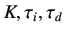
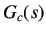
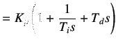
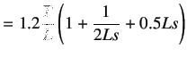
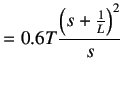

Next: Second Method Up: Ziegler-Nichols Rule for Tuning Previous: Ziegler-Nichols Rule for Tuning
Ziegler and Nichols suggested to set the values of
 according to the formula shown in table 5.1.
|  |  | (5.10) |
|  | (5.11) | |
|  | (5.12) |
rokade 2017-04-23